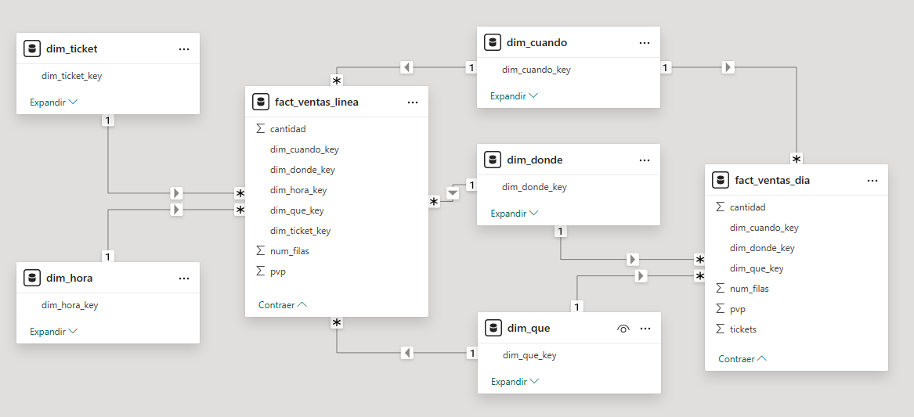

2 Power Query
- Vídeo (Parte I): https://youtu.be/uQd8NrILzdw
- Vídeo (Parte II): https://youtu.be/4l88tdZnA84
Power Query es una herramienta de Microsoft utilizada para importar, transformar y combinar datos de diversas fuentes en Excel y Power BI. Lo vamos a usar desde Power BI.
Permite automatizar procesos de limpieza y preparación de datos sin necesidad de programación, mediante una interfaz visual intuitiva. Facilita la conexión con bases de datos, archivos y servicios en la nube, aplicando filtros, combinaciones y cálculos antes de cargar los datos en el modelo final.
2.1 Obtención de los datos
Los datos necesarios están disponibles en:
Descargaremos el archivo:
ventas_oltp_csv.zip(base de datos OLTP en formato CSV).Descomprime el archivo en una carpeta de trabajo.
2.2 Datos disponibles
En la figura 2.1 se muestra el esquema de la base de datos OLTP.

Figura 2.1: Base de datos OLTP.
Los datos que hemos obtenido se corresponden con los de la base de datos OLTP pero están almacenados en formato CSV.
2.3 Objetivo
El objetivo de esta actividad es desarrollar las transformaciones sobre los datos originales para obtener como resultado la base de datos OLAP que hemos utilizado en otras actividades. Es posible que no obtengamos todos los campos de las tablas, pero al menos hemos de obtener la base de datos con esa estructura.
En la figura 2.2 se muestra el esquema de la base de datos OLAP.

Figura 2.2: Base de datos OLAP.
En la figura 2.3 se muestra otra representación del esquema de la base de datos OLAP, una representación detallada en la que se pueden ver todos los campos de las tablas.

Figura 2.3: Representación de la base de datos OLAP con todos los campos.
2.4 Pasos
Importar las tablas
- Eliminamos el paso
Tipo cambiado.
- Eliminamos el paso
Seleccionar una muestra de datos
- De la tabla
linea_ticket. - Quitar filas alternas (dejamos el 1‰: dejar 1 y quitar 999).
- De la tabla
Obtener los datos base
- Partiendo de la tabla
linea_ticket. - Operaciones principales:
- Referencia.
- Duplicación.
- Unión.
- Agrupar por.
- Partiendo de la tabla
Definir los hechos
- Partiendo de los datos base.
- Operaciones principales:
- Referencia.
Definir y enriquecer las dimensiones
- Partiendo de los datos base.
- Operaciones principales:
- Referencia
- Quitar duplicados.
- Renombrar campos.
- Unión.
- Agregar columna.
Relacionar hechos y dimensiones.
- Operaciones principales:
- Unión.
- Operaciones principales:
Seleccionar las tablas que componen el modelo.
Cargar todos los datos en el modelo.
Ejercicios
Todos los apartados siguientes valen igual (definición de cada tabla y carga del modelo).
En un archivo de Power BI cuyo nombre comience por tu nombre de usuario de correo electrónico, a partir de la base de datos OLTP en formato CSV, obtén las tablas base siguientes:
ventas_lineaventas_diafact_ventas_lineafact_ventas_diadim_quedim_dondedim_cuandodim_horadim_ticket
- Define las tablas de hechos y de dimensiones, de manera que sean las únicas que se carguen en el modelo.
Documentación a entregar:
Genera un documento en formato PDF.
Para cada una de las tablas que se indican (1 a 9), dedica un apartado en el documento y captura una pantalla completa de Power Query donde se vean los pasos de definición de la tabla y su contenido.
En un apartado adicional para la carga del modelo (10), captura una pantalla completa de Power BI donde se vean las tablas del esquema.